원자력기사 (2004-05-23 기출문제)
1과목: 원자력기초
1. 다음 입자들 중 싱크로사이클로트론으로 가속시킬 수 없는 것은?
- 전자
- 중성자
- α입자
- 양성자
(정답률: 알수없음)

2. 1H2은 안정한데 dineutron(n-n)이 불안정한 이유는?
- β- 붕괴를 하므로
- β+ 붕괴를 하므로
- 배타원리(Exclusion Principle)가 적용되기 때문에
- 정전기적 인력이 없기 때문에
(정답률: 알수없음)
3. 감마선과 물질과의 상호 작용에서 광전 효과에 의한 선형흡수계수는 무엇에 어떻게 비례하는가? (단, N, E, Z는 각각 물질의 밀도, 감마선의 에너지, 물질의 원자 번호를 나타낸다.)
- 선형흡수계수 ∝ N × Z5 × E-3.5
- 선형흡수계수 ∝ N × Z × E2
- 선형흡수계수 ∝ N × Z-3.5 × E5
- 선형흡수계수 ∝ N × Z2 × E
(정답률: 알수없음)
4. 1g의 중양자(deutron)가 아래와 같은 핵반응식에 따라 완전히 2He4로 바뀌었다면 이 때 발생하는 에너지는? (단, 중양자와 2He4의 질량은 원자질량단위로 각각 2.0142, 4.0026이다.)
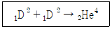
- 2×1018erg
- 4×1018erg
- 6×1018erg
- 8×1018erg
(정답률: 알수없음)
5. 다음 핵반응의 Q값은?
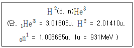
- 3.26MeV
- -3.26MeV
- 6.52MeV
- -6.52MeV
(정답률: 알수없음)
6. U-235를 핵연료로 하는 원자로의 keff의 값이 1.000에서 1.001로 변했다. 이 때 반응도 값의 변화는 몇 달러(dall-ar)인가? (단, β = 0.0065)
- 6.5$
- 0.65$
- 1.54$
- 0.154$
(정답률: 알수없음)
7. material Buckling이 5×10-4일 때 임계 bare sphere reactor의 크기는?
- 140.5
- 99.4
- 281.0
- 162.2
(정답률: 알수없음)
8. 1g의 235U가 완전히 핵분열하여 발생되는 총에너지는 몇 Joule인가? (단, 235U 한개가 분열할 때 200MeV의 에너지를 발생한다)
- 8.2×1010J
- 4.7×1010J
- 7.5×10-9J
- 5.1×1029J
(정답률: 알수없음)
9. Maxwell 분포를 따르는 중성자 집합이 있다. 만일 매체의 온도가 올라가면 그림에서 분포의 peak는?
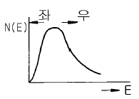
- 좌측으로 이동한다.
- 우측으로 이동한다.
- 온도에 무관하다.
- peak가 높아진다.
(정답률: 알수없음)
10. 유체의 상태를 표시하는 무차원수 중 관성력과 마찰력의 비를 나타내는 수는?
- 프란들 수(Prandtl Number)
- 누셀 수(Nusselt Number)
- 레이놀드 수(Reynolds Number)
- 페크렛 수(Peclet Number)
(정답률: 알수없음)
11. 핵비등(Nucleate boiling)을 억제시키는 방법이 아닌 것은?
- 증기보일러의 압력을 증가시킨다.
- 냉각수의 온도를 높인다.
- 보일러로 통하는 유체량을 증가시킨다.
- 운전 출력을 감소시킨다.
(정답률: 알수없음)
12. 경수로는 중수로와 달리 연료로 농축우라늄을 쓰는 이유는?
- 중수로보다 경수로에서 노심에 있는 구조물질에 중성자가 더 많이 흡수되기 때문
- 수소가 중수소보다 열중성자를 더 잘 흡수하기 때문
- 중수로보다 출력을 높이기 위해서
- 중수로보다 발전단가를 낮추기 위해서
(정답률: 알수없음)
13. 물에서 중성자 확산면적(L2)은 8㎝2이다. 어떤 원자로의 열중성자 이용율(thermal utilization factor)이 0.7일 때 물과 핵연료 혼합체의 확산면적을 구하면 약 얼마인가?
- 1.13㎝2
- 2.67㎝2
- 5.6㎝2
- 2.4㎝2
(정답률: 알수없음)
14. 열전달의 형태를 크게 전도, 대류, 복사의 3가지로 나눌 때 정상운전 중인 900MWe급 가압경수로(PWR)의 핵연료봉내에서 생성된 열이 냉각재까지 전달되는 형태 중 무시할 수 있는 것은?
- 대류
- 복사
- 전도
- 복사, 대류
(정답률: 알수없음)
15. 그림의 판(Slab)형 히터에서의 열저항도(Thermal resistance)는?
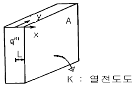
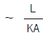
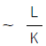
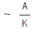
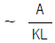
(정답률: 알수없음)
16. 원자로중 경수로(LWR)만으로 짝지워진 것은?
- PWR, AGCR
- BWR, HWR
- PWR, BWR
- AGCR, BWR
(정답률: 알수없음)
17. 다음 중 가압경수로의 격납용기(containment Vessel)내에 설치되지 않는 부품은?
- 원자로 용기
- 가압기
- 증기발생기
- 터빈발전기
(정답률: 알수없음)
18. 핵연료를 사용한 후 처리 방안은?
- 원자로에서 인출후 즉각 재처리하여 Pu과 폐기물을 분리한다.
- 재처리 방안으로 사용후 핵연료를 공기중에서 부수어 처리하는 건식 방법이 활용되고 있다.
- 재처리후 생성되는 폐기물은 일반 쓰레기와 같이 땅속에 매립한다.
- 일반적으로 물이나 유기 용매, 강산을 사용하는 습식방법이 건식 방법보다 널리 이용된다.
(정답률: 알수없음)
19. 원자로 운전상태를 크게 3가지 상황으로 구분하였을 때 해당되지 않는 것은?
- Normal Operation
- Anticipated Operational Occurences
- Limiting Accident
- Emergency
(정답률: 알수없음)
20. 다음 중 PWR, BWR, CANDU 발전소의 출력제어방식을 옳게 짝지은 것은?
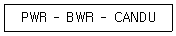
- 붕산 - 제어봉 - 붕산
- 붕산 - 재순환펌프 - 감속재수위
- 제어봉 - 제어봉 - 냉각재유량
- 제어봉 - 붕산 - 제어봉
(정답률: 알수없음)
2과목: 핵재료공학 및 핵연료관리
21. 원자로의 제어봉 등의 제어물질로 사용될 수 있는 재료들로 구성된 것은?
- 제논(Xenon), 흑연(Graphite), 마그네슘(Magnesium)
- 강철(Steel), 아연(Zinc), 중수(D2O)
- 카드뮴(Cadmium), 하프늄(Hafnium), 붕소(Boron)
- 지르코늄(Zirconium), 콘크리트(Concrete), 납(lead)
(정답률: 알수없음)
22. 다음은 UF6에서 UO2를 제조하는 공정들로서 틀린 것은?
- AUC공정
- GECO공정
- IDR공정
- PUREX공정
(정답률: 알수없음)
23. 비파괴검사의 방사선투과시험법에 쓰이는 감마선원이 가져야 할 특징을 적은 것이다. 틀린 것은?
- 분해능을 높이기 위해 선원의 크기가 커야 한다.
- 비방사능(Ci/g)이 높은 것이 좋다.
- 제조방법이 용이하고 값이 싸야 한다.
- 사진감광이 잘 되는 감마선 에너지를 방출해야 한다.
(정답률: 알수없음)
24. 원자로에서 냉각재가 가져야 할 특성을 나타낸 것으로 그 특성이 틀린 것은?
- 낮은 용융온도
- 낮은 유도 방사능
- 낮은 비등점
- 낮은 중성자 흡수단면적
(정답률: 알수없음)
25. 지르칼로이가 피복관 재료로 사용될 때의 특성을 적은 것이다. 잘못된 것은?
- 열중성자 흡수단면적이 작다.
- 고온의 물에서 부식 저항력이 크다.
- 융점이 높다.
- 고온의 수증기와 거의 반응을 안한다.
(정답률: 알수없음)
26. 1종류만의 안정 동위원소로 이루어진 어떤 원소 6×1016개에 선속밀도 1.0×1011n/㎝2.sec의 열중성자를 조사하여 (η, γ)반응으로 생성한 방사능의 세기는 조사시간에 따라서 표와 같이 되었다. 이 (η, γ)반응의 단면적은 몇 barns 인가?
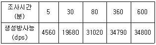
- 5.8
- 6.2
- 6.6
- 7.0
(정답률: 알수없음)
27. 과일, 야채류의 미생물을 살균하여 저장기간을 연장코자한다. 조사선량이 500krad인 때에 5krad/h로 10시간 조사하고 나서 방사선원을 교체하였기 때문에 방사선량율은 0.5krad/h로 감소되었다. 몇 시간 더 조사할 수 있는가?
- 600
- 700
- 800
- 900
(정답률: 알수없음)
28. 방사성 핵종(A) 1mCi의 붕괴형식(decay scheme)이 그림과 같을 때 B로의 초당 붕괴수로 맞는 것은?
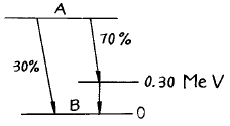
- 3.7×107
- 1.1×104
- 2.6×107
- 3.7×104
(정답률: 알수없음)
29. 고속로에 사용되는 블랭킷 재료로서 적합한 물질은?
- 238U
- 235U
- 233U
- 239Pu
(정답률: 알수없음)
30. 경수로 핵연료 제작시 변환공정과 재변환공정에 각각 들어가는 원료물질로 알맞게 짝지어진 것은?
- U3O8 – UF6
- 우라늄원광 - UF6
- UF6 – UO2
- 우라늄원광 - UO2
(정답률: 알수없음)
31. 반감기가 1.2분인 방사성 동위원소의 붕괴상수 λ는? (단, ln2 ≒ 0.693)
- 약 0.378 min-1
- 약 0.578 min-1
- 약 0.832 min-1
- 약 1.732 min-1
(정답률: 알수없음)
32. Ni를 사용하지 않아서 물에 의한 부식에서 발생되는 수소의 흡수현상을 방지하고 소량의 산소를 첨가하여 기계적 특성을 증가시킨 경수로용 피복관 재료로 많이 사용되는 것은?
- Zircaloy-2
- Zircaloy-4
- Van Arkel
- Stainless steel 316L
(정답률: 알수없음)
33. 다음 방사성 동위원소는 대부분이 β선을 방출한다. 이 중 γ선을 방출하는 것은?
- 3H
- 14C
- 24Na
- 45Ca
(정답률: 알수없음)
34. 방사선투과시험에서 F(= 선원의 지름), d(= 선원과 결함사이의 거리), t(= 결함과 film사이의 거리), Ug(= 불선명도)라 할 때 Ug의 값은?
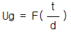
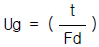
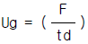
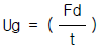
(정답률: 알수없음)
35. 각 원자로형에 따른 핵연료와 피복관 그리고 감속재를 나타낸 것이다. 이 중 틀린 것은?
- PWR : UO2 - Zry - H2O
- CANDU : U - Zry - D2O
- HTGR : UO2 - Zry - C
- BWR : UO2 - Zry - H2O
(정답률: 알수없음)
36. 의료용 기구의 방사선 멸균에 필요한 선량율은 다음 중 어느 것이 가장 적당한가? (단, 선원은 X - 선이나 전자선일 때라고 하자.)
- 100Gy/h
- 105Gy/h ~ 1015Gy/h
- 500Gy/h
- (103 ~ 106)Gy/h
(정답률: 알수없음)
37. 다음 중 잘못 연결된 것은?
- 중성자 수분계 : 241Am-Be
- 방사선투과시험(NDT) : 192Ir
- RI 두께계 : 13N
- 방사선멸균 : 60Co
(정답률: 알수없음)
38. 조선 공업 등에서 비파괴검사용으로 192Ir선원을 주로 사용하고 있다. 192Ir선원은 점선원일수록 좋으나 적당한 Ci 수량을 얻기 힘들어 다음과 같은 크기의 선원을 실제로 많이 사용하고 있다. 옳은 것은?
- 직경 0.1mm~0.2mm 원주형에 20~50Ci 단위
- 직경 6mm~10mm 공형에 100~200Ci 단위
- 직경 6mm~10mm 원주형에 100~200Ci 단위
- 직경 2mm~3mm 원주형에 20~50Ci 단위
(정답률: 알수없음)
39. 핵연료봉 설계기준으로 적합한 것은?
- 모든 운전상태에서 핵연료의 최고온도는 UO2의 융점 이하라야 한다.
- 연료봉 내부압력은 원자로 냉각재계통 운전압력이상이어야 한다.
- 정상 운전상태에서 핵연료 중심부의 용융은 전체 핵연료의 1%이내 라야 한다.
- 운전중 피복재와 냉각재의 반응에 의한 수소발생량은 총 발생량의 10%이내 라야 한다.
(정답률: 알수없음)
40. γ선과 물질과의 상호작용에서 광전효과가 일어날 때 광전자의 운동에너지(E)는 어떻게 표시되는가? (단, h는 plank정수, ν는 광자 진동수, ø는 그 전자의 결합에너지)
- E = hν + ø
- E = hν2 - ø
- E = hν - ø
- E = h2ν + ø
(정답률: 알수없음)
3과목: 발전로계통공학
41. 침전법에서, 목적으로 하는 방사성원소를 모액중에 남기게 하고 방해하는 방사성원소를 공침 등에 의하여 침전분리시킬 때의 운반체는?
- Hold-back carrier
- Scavenger
- Collector
- Coprecipitator
(정답률: 알수없음)
42. 플루토늄 화합물 중 가장 안정한 것은?
- +4 산화상태
- +5 산화상태
- +6 산화상태
- +2 산화상태
(정답률: 알수없음)
43. 131I- 방사성 동위원소를 측정하니 131I- 가 900cpm, 131IO3가 100cpm였다. 131I- 의 방사화학적 순도는 얼마인가?
- 100%
- 91%
- 10%
- 90%
(정답률: 알수없음)
44. 현재 상업적으로 사용되고 있는 가장 보편적인 핵연료 재처리 방법은?
- Nozzle법
- H2O/H2S법
- Laser법
- Purex solvent extraction법
(정답률: 알수없음)
45. 방사화학적 분리(Radiochemical separation)에서 담체(carrier)가 필요한 이유는?
- 방사능 측정이 용이하기 때문이다.
- 방사능을 감력시켜주기 때문이다.
- 불순물을 제거하기 때문이다.
- 극미량이기 때문이다.
(정답률: 알수없음)
46. 다음 중 높은 비방사능의 방사성 동위원소를 제일 필요로 하는 분야는?
- 화학 공업
- 일반적인 화학 연구실
- 의학적 이용
- 동위원소 희석법에 의한 분석실
(정답률: 알수없음)
47. 방사성 동위원소를 원자로 중성자를 이용하여 제조할 경우 어떤 반응이 가장 큰 확율로 핵반응이 일어 나겠는가?
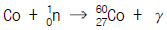
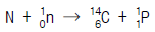
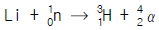
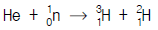
(정답률: 알수없음)
48. 원자력발전소에서는 연료를 소비하는 동시에 새로운 연료가 생산되는데 로내의 U238은 중성자를 흡수하면 무엇으로 되는가?
- Pu239
- Th232
- Ra231
- U235
(정답률: 알수없음)
49. 다음 중 고체-액체 분리에 이용되는 장치가 아닌 것은?
- mixer-settler
- thickner
- 로터리 여과기
- 벨트 여과기
(정답률: 알수없음)
50. 신속 방사화학적 분리 방법은?
- 공침법
- 이온 교환법
- 용매 추출법
- 증발법
(정답률: 알수없음)
51. 방사성 동위원소 Ba용액을 구입하였다. 자핵종 La를 얻기 위하여 (1)로서 비방사성 Ba 10㎎과 (2)로서 비방사성 La 10㎎을 가한 후 Ba을 BaSO4 형태로 침전시켰다. ( )안에 들어갈 적당한 용어는? (단, 답은 1, 2 순으로 기재)
- 보지담체, 담체
- 공침체, 스카벤저
- 보지담체, 공침체
- 스카벤저, 보지담체
(정답률: 알수없음)
52. 137Cs 고화체를 25℃의 물에 63일간(t = 63)넣어 두었다. 측정한 S/V값은 1.5㎝-1, Dw값은 7×10-5㎝2/day이었다. 그렇다면 몇 %의 137Cs가 침출되었겠는가?
- 2.5
- 5
- 10
- 20
(정답률: 알수없음)
53. 다음 설명 중 틀린 것은?
- Gibbs에너지는 온도, 압력, 농도 등의 함수이다.
- 비열은 일반적으로 온도의 함수이다.
- 자연계에서 일어나는 모든 반응은 엔트로피가 감소하는 방향으로 일어난다.
- 일정한 온도와 압력에서 반응계와 생성계의 Gibbs에 너지 차가 0 이면 열역학적 평형이다.
(정답률: 알수없음)
54. 내부 전환전자(internal conversion electron)와 관계가 깊은 붕괴 현상은?
- 알파선 방출
- 베타선 방출
- 감마선 방출
- 중성미자(neutrino) 방출
(정답률: 알수없음)
55. 어미 동위원소와 딸 동위원소의 붕괴상수가 각각 λ1, λ2 일 때 방사평형이 일어나지 않을 조건은?
- λ1 ＞ λ2
- λ1 ＜ λ2
- λ1 ≈ λ2
- λ1 ≪ λ2
(정답률: 알수없음)
56. 고속 중성자가 일으키는 반응으로 제일 힘든 것은?
- (n, γ) 반응
- (n, p) 반응
- (n, α) 반응
- (n, 2n) 반응
(정답률: 알수없음)
57. 27Al핵에 원자로에서 중성자 충격시켰더니 중성자 1개를 흡수하고 α-선을 방출하였다. 이로부터 화학처리를 하여 27Al을 제거시키고 순수한 방사성 핵종을 얻었다. 어떠한 핵종이 얻어졌겠는가? (단, 도면 참조)
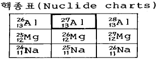
- Al
- K
- Mg
- Na
(정답률: 알수없음)
58. 희토류 원소들의 상호분리 방법으로 가장 좋은 방법은?
- 방사콜로이드법
- 이온교환법
- 용출법
- 증류법
(정답률: 알수없음)
59. U3O8을 75% 포함하고 있는 피치브렌드 광석 2톤에서 100㎎의 라듐을 분리하였다. 분리수율은 얼마인가? (단, U238의 반감기 4.5×109년, 라듐의 반감기 1622년)
- 1.2%
- 2.3%
- 12%
- 23%
(정답률: 알수없음)
60. 방사성폐기물의 지중처분에서 고려할 점은?
- 암염층은 지진이 많은 곳에 있다.
- 화강암층은 일차적 투과도가 낮다.
- 화산암층은 열전도도가 높다.
- 동굴처분은 누수현상을 고려할 필요가 없다.
(정답률: 알수없음)
4과목: 원자로 안전과 운전
61. 고리원자로의 경우 βeff(effective delayed neutron fraction)는 0.006이다. 만일 임계에 있던 이 원자로에 제어봉을 삽입함으로써 40센트(cent)의 반응도를 주입했다면 증배계수 K는?
- K＝0.9976
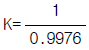
- K＝1.0024
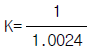
(정답률: 알수없음)
62. 방사선피폭에 대한 반치사량(LD50)은 약 얼마인가?
- 100Rad
- 200Rad
- 400Rad
- 600Rad
(정답률: 알수없음)
63. 원자력발전에 드는 비용을 절감하는 방법 중 적절치 않은 것은?
- 발전소의 건설공기를 단축한다.
- 핵연료의 농축공정을 가능한 늦게 한다.
- 가동율을 높여 준다.
- 핵연료의 성형가공을 미리 한다.
(정답률: 알수없음)
64. Co-60 1Ci 선원을 1m 거리에서 방사선량율을 측정해 보니 14.5R/h를 나타냈다면 3Ci 선원은 1m 거리에서 얼마만큼의 방사선량율을 나타내겠는가?
- 29.5R/h
- 43.5R/h
- 72.5R/h
- 83.5R/h
(정답률: 알수없음)
65. 위험도(risk)에 대한 설명으로 올바른 것은?
- 위험도는 사고가 발생했을 때의 방사성물질 누출량에 단위 방사선량으로 부터의 피해를 곱한 값이다.
- WASH-1400의 안전성 연구는 위험도 분석의 체계화를 이루었다.
- 위험도를 낮추기 위해서는 고장수목(fault tree)을 줄여야 한다.
- 원자력발전의 위험도는 자동차사고 보다는 낮으나 비행기사고 보다는 높다.
(정답률: 알수없음)
66. 방사선 작업종사자가 정기적으로 말초혈의 검사를 행하는 이유 중 가장 타당한 것은?
- 말초혈중의 혈구는 방사선 감수성이 높아 방사선 장해를 받기 때문이다.
- 말초혈의 변화는 골수의 방사선 장해를 반영하기 때문이다.
- 말초혈의 변화는 개체의 감수성의 지표가 되기 때문이다.
- 말초혈 검사에 의하여 간단히 피폭선량을 추정할 수 있기 때문이다.
(정답률: 알수없음)
67. 다음 중 가압경수로의 안전주입을 중단시킬 수 있는 조건으로 적당하지 않은 것은?
- 원자로 냉각재계통 압력증가
- 증기발생기 보조급수유량 충분
- 가압기 수위 50%이상
- 원자로 냉각재 온도 감소
(정답률: 알수없음)
68. 그림은 원자로 운전과 더불어 연료 연소에 따르는 핵물질의 농도 변화를 나타낸 것이다. 그림의 곡선은 다음 핵종 중 어느 물질의 농도 변화에 알맞은 곡선인가?
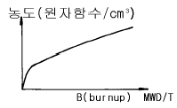
- Xe135
- Sm149
- U235
- U238
(정답률: 알수없음)
69. 2.5MeV γ-선으로 인하여 1J/kg이 조직체에 흡수되었다면 이는 Kerma 단위로 얼마인가? (단, Gy(Gray)는 SI unit)
- 0.1rad
- 50rad
- 0.1Gy
- 1Gy
(정답률: 알수없음)
70. CANDU형 원자로에 있어 비상노심냉각계통은 열수송계통의 절대압력이 55.2bar 이하이고, 다음 조건 중 하나가 만족되면 작동된다. 아닌 것은?
- 원자로 건물 고압
- 핵연료 교환기실 고온
- 감속재 상층계통 고압
- 증기발생기실 고온
(정답률: 알수없음)
71. 비밀봉 방사성물질이 체내에 침입하는 경로를 위험도가 큰 순서로 나열된 것은?
- 피부침입 - 흡입섭취 - 경구섭취
- 경구섭취 - 흡입섭취 - 피부침입
- 흡입섭취 - 피부침입 - 경구섭취
- 흡입섭취 - 경구섭취 - 피부침입
(정답률: 알수없음)
72. 다음 중 고속중성자를 차폐하는데 가장 효율적인 것은?
- 경수(H2O) + 붕소(B)
- 중수(D2O) + 인디움(In)
- 시멘트 + 경수(H2O)
- 납(Pb) + 붕소(B)
(정답률: 알수없음)
73. 어떤 원자로에 즉발중성자만 생성되고 있을 때 외부에서 주입된 반응도에 의한 영향으로 올바르게 설명한 것은? (단, 원자로 초기상태는 임계상태라고 가정한다.)
- 반응도주입에 관계없이 임계상태를 유지한다.
- 적은 양의 반응도 주입에도 쉽게 초임계상태가 된다.
- 적은 양의 반응도 주입에도 쉽게 저임계상태가 되어 곧 정지한다.
- 주입된 반응도와는 무관하다.
(정답률: 알수없음)
74. 원자력발전소의 공학적 안전설비와 가장 거리가 먼 것은?
- 화학 및 체적제어 계통
- 긴급 노심냉각 계통
- 격납용기
- 잔열제거 계통
(정답률: 알수없음)
75. 오염제거작업을 수행할 때 주의하여야 할 기본적 사항으로 잘못된 것은?
- 조기제염을 실시한다.
- 오염확대 방지에 노력한다.
- 습식법을 채용한다.
- 제염작업에 종사하는 자는 외부방사선피폭을 최소로 줄이는데 노력한다.
(정답률: 알수없음)
76. 원자력발전소의 감가상각 계산법중 어느 한해의 감가상각비와 그해까지 감가상각이 되지 않은 장부가격에 대한 수익금의 합이 내용년한동안 일정하게 되도록 하는 방법은?
- 정액법
- SYD법
- 감채기금법
- 이중정률법
(정답률: 알수없음)
77. 송전단 설계용량이 60만kWe인 발전소에서 자동율이 80%일 때 그 해 전기판매 대금은 얼마인가? (단, 1년간 360일을 설계용량으로 운전하고 1kWh당 전기요금은 30원으로 가정한다.)
- 1.24×1011원
- 1.58×1013원
- 5.26×1013원
- 4.21×109원
(정답률: 알수없음)
78. 원자로 냉각재 상실사고로서, 저온관 파단과 고온관 파단사고가 있다. 다음 설명 중 옳은 것은?
- 고온관 파단이 저온관 파단보다 안전주입이 어렵다.
- 고온관 파단이 저온관 파단보다 안전주입이 쉽다.
- 고온관 파단과 저온관 파단은 안전주입 조건이 같다.
- 고온관 파단과 저온관 파단은 안전주입 조건과 무관하다.
(정답률: 알수없음)
79. 원자로운전시 출력을 변화시킬 때 제어봉이 보상해야 할 총반응도(Reactivity)를 총출력 반응도 결손이라고 한다. 이에 관계있는 사항이 아닌 것은?
- 도플러 효과
- 냉각재의 온도증가에 따른 효과
- 기포효과
- 연료의 잉여 반응도
(정답률: 알수없음)
80. 발전소 외부전원과 비상 디젤발전기가 동시에 상실되었을 때 사고 수습에 필수적인 요소는?
- S/G PORV차단, AC전원 조기복구, 터빈구동보조 급수펌프 기동 급수공급
- S/G PORV개방, AC전원조기복구, 터빈구동 보조 급수펌프 기동 급수공급
- S/G PORV차단, V/V개방, RCP P/P자동차단 확인 및 조치
- AC전원조기복구, safety V/V차단 터빈구동보조 급수펌프 가동급수공급
(정답률: 알수없음)
5과목: 방사선이용 및 보건물리
81. 다음 방사선중 정지질량이 없는 것은?
- 알파선
- 베타선
- 감마선
- 중성자
(정답률: 알수없음)
82. γ선의 에너지 분포를 측정할 때 기기의 연결 순서로서 옳은 것은?
- detector → pre amp. → main amp. → M.C.A(multi channel analyzer)
- detector → main amp. → pre amp. → M.C.A
- M.C.A → pre amp. → main amp. → detector
- M.C.A → main amp.→ pre amp. → detector
(정답률: 알수없음)
83. G-M Counter의 특성을 설명한 것으로 틀린 것은?
- β선 측정에 적합하다.
- 불감시간이 짧다.
- 출력 펄스가 크다.
- γ선의 효율은 수 % 정도이다.
(정답률: 알수없음)
84. 다음 중 1.02MeV 미만의 감마선 에너지스펙트럼에서 나타날 수 없는 것은?
- compton edge
- back-scattering peak
- single-escape peak
- photo-peak
(정답률: 알수없음)
85. 방사성 핵종의 반감기와 평균수명을 값으로 비교해 볼 때 어느 것이 더 큰가?
- 반감기
- 평균수명
- 같다.
- 핵종에 따라 다르다.
(정답률: 알수없음)
86. 방사선과 측정용 신틸레이터를 짝지은 것이다. 올바른 것은?
- 중성자 - 액체 신틸레이터
- β선 - NaI(Tℓ ) 신틸레이터
- γ선 - LiI(Eu) 신틸레이터
- α선 - ZnS(Ag) 신틸레이터
(정답률: 알수없음)
87. 증폭기의 잡음(noise)에 대한 설명으로 올바른 것은?
- 그리드(grid)전류 잡음은 양이온 전류에 관계한다.
- 열잡음은 정상 플레이트(steady plate)전류에 관계한다.
- 산탄효과(shot effect)잡음은 전도체의 자유전자의 불규칙운동 결과이다.
- 깜박임(flicker)잡음은 음극전류의 변동 때문이다.
(정답률: 알수없음)
88. 다음 형광체중 β-선 검출에 쓰이는 것은?
- NaI(Tℓ )
- anthracene
- LiI(Eu)
- CsI(Tℓ )
(정답률: 알수없음)
89. BF3계측기로 열중성자(thermal neutron)를 측정할 때의 핵반응은?
- (n, d)반응
- (n, α)반응
- (n, n')반응
- (n, p)반응
(정답률: 알수없음)
90. 거품상자(bubble chamber)가 안개상자(cloud chamber)나 사진유제 건판보다 우수한 점은?
- 조작이 쉽고 가격이 싸다.
- 밀도가 실험조건에 부합된다.
- 사진찍기가 편리하다.
- 입사입자와 충돌을 하지 않는다.
(정답률: 알수없음)
91. 체렌코프 계수기(Cerenkov Counter)의 용도는?
- 우주선 측정
- 고에너지 하전입자 측정
- γ-중성자 측정
- β-γ 동시 측정
(정답률: 알수없음)
92. 전리함의 감도를 바르게 설명한 것은?
- 1R의 X선 조사에 의해 생긴 출력 전압으로 정의한다.
- 전리함의 전리용적에 반비례한다.
- 전리함 전체의 정전용량에 비례한다.
- X, γ선의 에너지에 무관하다.
(정답률: 알수없음)
93. 검출기에 바로 연결하는 캐소드 플로워(cathode followerpre-amplifier)의 목적은?
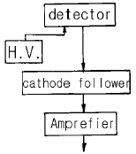
- 증폭을 크게 하기 위하여
- 출력전류를 크게 하기 위하여
- 고전압을 걸기 위하여
- 파형을 정류하기 위하여
(정답률: 알수없음)
94. 동일계수 조건에서 시료와 표준 물질의 방사능을 측정한 결과 자연계수를 제외하고 각각 2,000 ± 20cpm 및 1,600 ± 16cpm이었다. 다음 중 시료와 표준 물질의 방사능비와 그 오차로 옳은 것은?
- 1.25 ± 0.520
- 1.25 ± 0.018
- 3.25 ± 0.520
- 3.25 ± 0.018
(정답률: 알수없음)
95. 중성자 검출에 사용되는 BF3 기체봉입 검출기가 사용되는 영역의 명칭은?
- 비례계수 영역
- 재결합 영역
- G - M 영역
- 전리함 영역
(정답률: 알수없음)
96. 다음 방사선 검출기 중에서 에너지 측정이 가능하지 않은 것은?
- proportional counter
- NaI(Tl) detector
- G - M counter
- Ge(Li) detector
(정답률: 알수없음)
97. 그림은 NaI(Tℓ )섬광분광계(Scintillation spectrometer)로 137Cs(137mBa)에 대한 파고분석의 결과이다. 사선부분은 무엇인가?
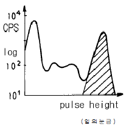
- Compton효과를 표시한다.
- Compton효과에 의한 전자의 최대 에너지에 해당된다.
- 137mBa에서 방출되는 K- X선에 의한 Peak를 표시한다.
- 광전효과에 의한 γ-선에너지 흡수에 해당된다.
(정답률: 알수없음)
98. 반도체 측정기내에서 전자-정공(electron-hole)쌍을 만드는데 필요한 에너지는 Si가 3.23eV, Ge이 2.84eV, InAs이 0.06eV, CdS이 5.2eV이다. 다음 중 어떤 반도체로 만든 측정기의 분해능이 가장 우수하겠는가? (단, 측정기로서 필요한 다른 조건은 무시한다.)
- InAs
- Ge
- Si
- CdS
(정답률: 알수없음)
99. γ선과 물질과의 상호작용중 광전효과는 입사γ선과 전자와의 충돌현상인데, 최초의 전자는 어느 상태에 있는가?
- 자유상태
- 여기상태
- 속박상태
- 가속상태
(정답률: 알수없음)
100. 다음 중 compton산란과 관계있는 것은?
- γ선의 에너지가 모두 전자에게 전달된다.
- γ선이 양전자와 음전자의 쌍으로 변화한다.
- γ선이 궤도 전자와 충돌한다.
- γ선이 양성자와 중성자로 변화한다.
(정답률: 알수없음)